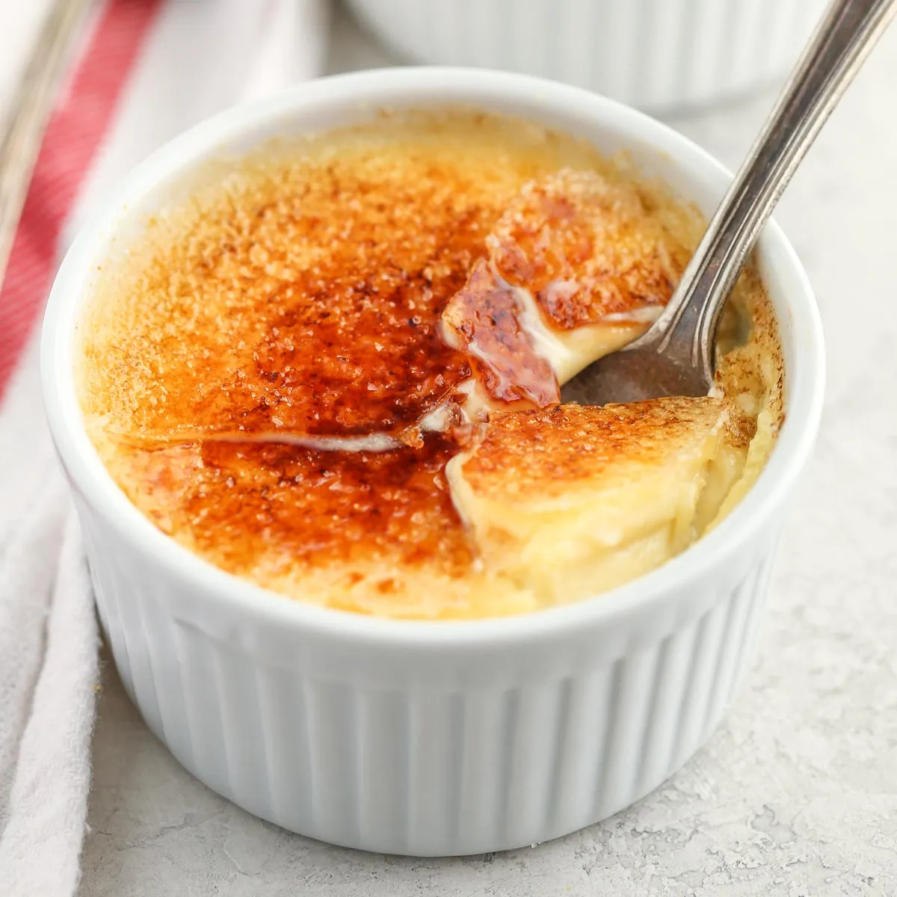

Home
Creme Brulee

Crème brûlée is a rich, silky vanilla custard topped with a crisp layer of caramelized sugar, offering a perfect balance of creamy and crunchy in every elegant bite.
Crème brûlée is a luxurious French dessert that combines a smooth, velvety vanilla custard base with a contrasting layer of crisp, caramelized sugar on top. Served chilled with its signature torched crust, each spoonful offers the perfect blend of creamy richness and satisfying crunch. It's an elegant yet approachable treat, often garnished with fresh berries or a sprig of mint, making it a favorite for both fine dining and indulgent nights in.
Ingredients
- ¾ cup heavy cream
- 5 teaspoons white sugar
- 2 large egg yolks
- ½ teaspoon vanilla extract
- ⅓ cup white sugar
Steps
- Preheat the oven to 350 degrees F (175 degrees C). Prepare some boiling water.
- Combine cream and 5 teaspoons sugar in a saucepan over medium heat. Cook, stirring occasionally, until small bubbles appear around the edges of the pan, 5 to 6 minutes. Remove from the heat and set aside.
- Beat egg yolks and vanilla in a bowl until smooth and light. Pour hot cream mixture into the egg yolks, a little at a time, and beat continuously until well blended. Strain the mixture through a fine sieve into a bowl. Divide evenly among four 3-ounce ramekins.
- Arrange ramekins in a baking pan and place on the middle shelf of the preheated oven. Pour boiling water into the baking pan until halfway up the sides of the ramekins. Cover the pan loosely with aluminum foil.
- Bake until custard is just set and jiggles when gently shaken, about 25 minutes. Carefully remove from the oven and let cool to room temperature, about 30 minutes. Transfer to the refrigerator to chill for 2 to 3 hours, or overnight.
- Sprinkle remaining sugar evenly over top of the cooled custards. With a kitchen torch, move the flame continuously in a circular motion over the surface of each ramekin, until the sugar melts and becomes golden brown and bubbly. Serve immediately.